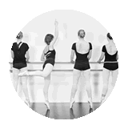
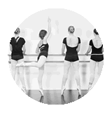

|
On
Stage
Extra!
De
Balletboetiek verzorgt voor haar leerlingen ook presentaties,
familiedagen, instuif-lessen, en voorstellingen zodat
zij zich kunnen presenteren aan hun eigen publiek. Deze
extraatjes zullen tijdens het seizoen worden aangekondigd.
Seizoen
2017/2018 zal een aanloopje worden naar ons 10-jarig bestaan
in 18/19. Voorafgaand aan dat feestelijke seizoen gaan
we een Eigenwerk Presentaties organiseren en komt er een
wedstrijd voor alle leerlingen... hierover later meer.
|


 
